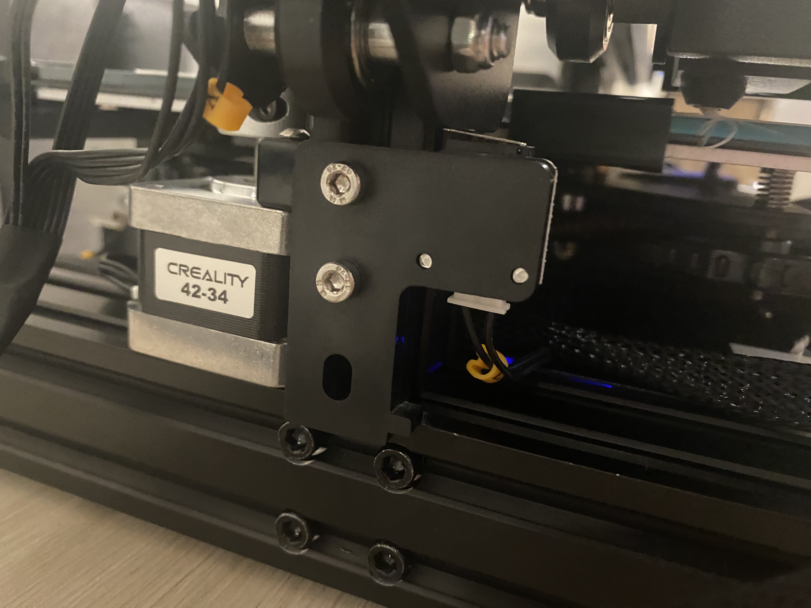

Photo by Kadir Celep on Unsplash
Assembling the 3D Printer
I bought a Creality Ender-3 Pro 3D Printer (0.4 mm nozzle diameter / 1.75 mm filament) with my roommate Joyce, and we worked together to assemble it by following an YouTube tutorial step by step. The entire process took us around 2 hours.
The picture below are some of the major steps captured during the assembling process. We carefully put on different parts piece by piece, making sure that all the screws and nuts were not loose and that some plastic parts were not tightened too much (which might break the plastic parts).
It is also very important to make sure that the voltage is set to 115v as we are in the US.

For the build plate level, we put the z-axis switch all the way at the bottom (as shown below), and it seemed to work alright. Later on we tried to adjust it while we were leveling the bed, but still it seemed best to keep it at the bottom.
Even though we were quite confused and had to pause/replay the tutorial multiple times, we were able to get the 3D printer to run on our first try! There were no major issue during our assembling process.
However, putting in the filament was trickier than it seemed to be in the tutorial video. We didn't realize we need to press and hold the clamp to be able to feed the filament in (despite how obvious it now seems). Also, the hole to the tube was quite small, so we had to remove the nut first, put the filament in and then put the nut back, while making sure that the nut position properly without blocking the movement of the filament.
Bed Leveling
To prepare for the print, I first conducted the bed leveling protocol by following the instructions from Filament Friday and this video. Bed leveling is critical to the adhesion and the success of the 3D prints.
There are two gcode files required. The first is the CHEP_M25_bed_level.gcode file for adjusting the corners, by sliding a piece of paper underneath and adjust the bed until the paper hardly moves.
*Ender 3 Bed Level by Elproducts is licensed under the Creative Commons - Attribution license.
The second is CHEP_bed_level_print.gcode to do live adjustment on the bed level knobs. By rubbing the printed filament on the bed and make sure that they are not moving, we can make sure that the bed is leveled.
My bed leveling attempts weren't always successful. And my key takeaways are:
(1) When checking the four corners, make sure that there are enough resistance when sliding in/out the paper between the extruder and the bed. If the filament can't be fully attached to the bed, try to go even tighter at the first step.
(2) For step two, always make sure that all of the squares, from the largest outside to the smallest one in the middle, can be attached to the bed and not easily rubbed off. Otherwise, things like below may happen...
I thought the bed was leveled and the filament could be adhered to the bed as I only looked at the two outer squares...but the filament actually could not be adhered properly in the middle (where I printed my entire model)...Modeling in Rhino & Slicing in Cura
I modeled the cubes/tubes/cylinders in Rhino first, exported them into .stl files using the below settings (reference).
For my nested object, I imported a UW logo in Adobe Illustrator, extracted its outline and then imported the AI file into Rhino. I then extruded the shape to make it a 3D model.
From AI to Rhino to CuraLet's Print!
So finally I got to the printing part. Here is a table documenting the prints, their printing duration and their sizes to check if they fall within the tolerance.
All of the prints!

Notes
Some of my notes and lessons learned...
If there are adhesion issues, try the followings: (1) leveling the bed, reduce the distance between the nozzle and the bed (2) increase the bed temperature by 5 degrees each increment (3) increase the extruder temperature (4) use BRIM (5) increase BRIM width (6) clean the nozzle as it may be clogged.
Even if you feel confident that your prints are gonna come out alright and you wanna walk away from the printer, wait until it prints for a little to see if it actually succeeds before you walk away. Otherwise you might end up like this...I didn't know the nozzle was clogged and the filament did not come out, it kept printing for 20 minutes...
Attachment
The Rhino source file, .stl files and gcode files can be found here.
Acknowledgements
Thanks to Joyce who worked with me to put the 3D printer together! It would certainly be more difficult to assemble without help. Also need to thank her for all the support and help during the printing process! And a special thanks to my roommates for enduring the noise caused by the printer...